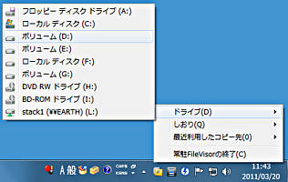

この項目をチェックすると、FileVisorのメインウィンドウが開いている状態でのFileVisorの終了ができなくなり、 終了を選ぶとFileVisorはアイコン状態になります。
上記の「常駐させる」の項目をチェックした場合で、 この項目をチェックすると、FileVisorを最小化した際には通知領域のFileVisorアイコンのみ残して タスクバーからはFileVisorアイコンが消されます。
常駐状態からFileVisorのウィンドウを開くためのホットキーを定義します。 入力欄にフォーカスを移して、希望のキーの組み合わせを押下することで指定できます。
FileVisorのトレイアイコンをクリックした際に表示されるメニューをホットキーを指定して呼び出します。 入力欄にフォーカスを移して、希望のキーの組み合わせを押下することで指定できます。

FileVisorのトレイアイコンをクリックした際に表示されるメニューからフォルダを選択したら、 そのフォルダをどのように開くか指定します。